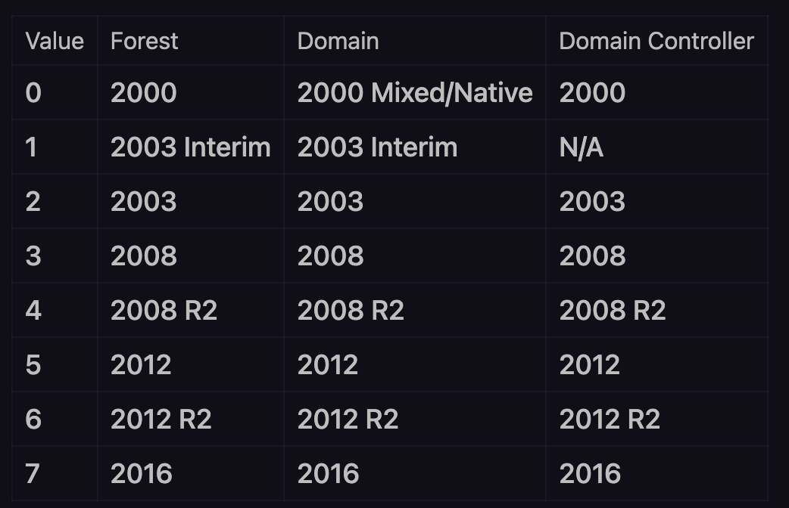

DNS Recon
dig -t SRV _ldap._tcp.dc._msdcs.domainnam
You may easily obtain the IP of the DNS, which serves as the primary domain controller, by using the domain name as a target.
dig -t SRV _gc._tcp.domainname
dig -t SRV __kerberos.__tcp._tcp.domainname
dig -t SRV _kpasswd._tcp._tcp.domainname
Don’t forget to add the local domain inside the /etc/hosts file.
Get DFL of Domain & Forest
If you have the DFL, you can easily check whether the network uses legacy protocol.
ldapsearch -x -LLL -H ldap://10.9.35.11 -b '' -s base '(objectclass=*)'
